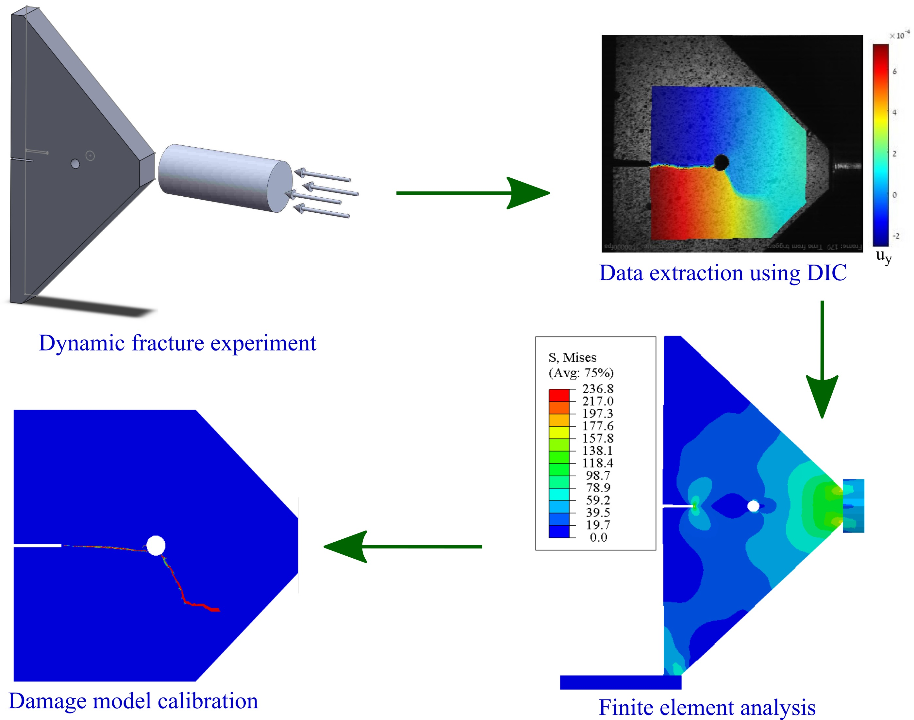

- Structural - Static & Dynamic analysis
Static material analysis is used for quality control and materials testing, while dynamic material analysis is used in the design and testing of mechanical systems and structures that are subjected to dynamic loads. Both techniques help to determine the properties of materials and their suitability for various applications.
Fracture under static (slow) loading (vertical displacement is shown in colors). The fracture occurs slowly and the stress is distributed in the system.
Fracture under dynamic (sudden) loading. The crack propagates very quickly and the fracture is different from that under slow loading. At very high loading rates, there is not enough time for the stress to be distributed in the system.
The graphics above is the fracture of the same specimen under static and dynamic loading. Here the specimens break distinctively due to the variation in the loading rate. I have examined the role of loading rate on PMMA (plexiglass) by applying loads at different rates varying from 10-3/s and 103/s loading rates - as you can imagine, the results were very different and required seperate analysis for each. Static analysis is often used to study systems because of its simplicity compared to transient analysis. As the loading rate increases, the material behaviour can change drastically and it would be better to use transient analysis for these types of systems.
An important area of dynamic analysis is the vibrational or modal analysis which examines the influencial frequencies of the system based on the material properties and boundary conditions are examined. This is where the natural frequency of the system is compared to an external stimulus to avoid excessive deformation and vibration.
- Thermo - Structural analysis
In many applications, thermal analysis is as important as the structural analysis, especially since they are coupled in most systems. In addition to the thermal expansion, many material properties are linked to the temperature. Failure to consider thermal aspects in an analysis could mean ignoring the critical weak links in a system. For example, in an electric motor, the temperature in different parts of the motor can rise to over 2000C. If the thermal expansion is not considered in the design, it could destabilise the rotor, reduce the air gap, increase the load on the bearings... and any of these could lead to motor failure.
Most objects in our surrounding are multiphysics system, where the simultaneious interaction of more than one physical phenomenon determines their nature. Generally, a multiphysics analysis of a system requires to consider the interactions of these listed fields.
- Deformation: Stress-strain relations
- Heat transfer: Temperature distribution & thermal expansion
- Fluid low: Fluid - Structure interactions, heat transfer
- Electromagnetics: Body forces & heat generation
- Acoustics: Vibrational analysis & dynamic loading
For most systems, only one of these physical aspects needs to be considered. As the number of physical phenomena in a system increases, so does the complexity. For these systems there are explicit & implicit methods to couple these phenomena to change the complexity. An example of such a complex system is the fuel cell battery where 4 phenomena come into play - structural, thermal, electromagnetic and fluid effects.
- Fracture mechanics
Fracture mechanics is a field of mechanics that focuses on understanding the behaviour of cracks or defects in materials, and how they affect the strength and integrity of structures. It provides a framework for predicting the performance and durability of structures subjected to different loading conditions. This is particularly important in engineering and materials science where structures are subjected to dynamic and cyclic loading such as bridges, aircraft, and pipelines. Fracture mechanics enables engineers to develop materials and designs that are more resistant to fracture, and to predict the remaining useful life of existing structures.
Fracture mechanics combines theoretical, experimental, and numerical methods and draws on concepts from mechanicsDuring my PhD, I focused on the fracture of brittle and ductile materials by developing different damage models and validating them experimentally., materials science, and physics. Stress intensity factors, crack growth rates, fracture toughness, and fatigue life are some of the key concepts that fracture mechanics employs to understand the mechanisms of crack growth and failure. By understanding how cracks propagate and fail, engineers can design and develop more robust and durable structures that can withstand dynamic and cyclic loads.
During my PhD, I focused on the fracture of brittle and ductile materials by developing different damage models and validating them experimentally.
- CAE & FEA
FEA has been a blessing to the engineering world. This numerical tool has accelerated the development timescale over the last few decades. Particularly in the early stages of design, FEA allows different possibilities to be explored without relying too heavily on experimental/testing techniques. FEA (Finite Element Analysis) and CAE (Computer Aided Engineering) are two related fields commonly used in engineering and design. CAE typically involves a number of different tools and techniques such as simulation, optimisation and data analysis. It can be used in many different areas of engineering, including mechanical, electrical and civil engineering.
FEA is a specific type of CAE that focuses on the numerical analysis of structures and systems using finite element methods. FEA is often used to simulate and analyse the behaviour of complex systems and structures under various conditions such as mechanical stress, heat transfer and fluid flow. In FEA, a complex structure is broken down into smaller, simpler elements or parts, and the behaviour of each element is analysed using mathematical models and algorithms.

The process of material modelling and validation using experiments. Experimental data is compared with FEM-implemented material models to validate different material models.
There are three main steps involved in finite element analysis - pre-processing, processing and post-processing. There are many software developed to implement FEA to find engineering solutions. To name a few - Ansys, Altair, Siemens NX, Comsol, Dassault Systems and Abaqus. These softwares differ in terms of their focus on engineering fields, ease of use, types of material models, etc. Many of the software are capable of handling coupled systems that may include structural analysis, thermal analysis, fluid mechanics and electro-mechanical analysis. An example of such a system is a fuel cell, which requires structural, thermal, fluid dynamic and electromagnetic analysis. Most of these systems are decoupled into simpler forms to simplify the analysis and reduce complexity while maintaining sufficient accuracy. Although FEA has been developed over two decades, there is still room for development, optimisation and automation.
The recent advent of topology optimisation and generative design has revolutionised the design process. Currently, when designing a structural component, one has the option of considering various design possibilities with certain constraints, along with material and manufacturing costs. With the use of topology optimisation, it is easy to improve the efficiency of structural components. In previous decades, it was possible to reduce material use by up to 5 or 8% using complicated failure models and structural analysis. But topology optimisation has changed the playing field, improving it by more than 50% in some cases. The manufacturing of these systems was an issue before, but with the advent of 3D printing, many of the applications are possible with topology optimisation. Many of the FEA software have implemented these optimisation methods and various companies have started to develop different systems. An example is (car company) where they have adopted a new design philosophy to save time, money and effort. The chassis of the car is designed taking into account the strength distribution, impact absorption during crashes and even the electrical wiring in the car. This was made possible by the simultaneous development of various engineering disciplines, in particular 3D printing and topology optimisation.
- Material modeling
Material modelling is the process of developing mathematical models and simulations to predict the behaviour of materials under different conditions. This is an important area of study because it allows engineers and scientists to design and optimise materials for specific applications without the need for costly and time-consuming physical testing. These models can simulate a wide range of material properties such as strength, stiffness, fatigue and fracture toughness.
One of the key benefits of material modelling is that it can help identify potential problems and issues before they occur. For example, material models can predict the behaviour of materials under different environmental conditions, such as extreme temperatures or corrosive environments. This allows engineers to design materials that are more resistant to these conditions, reducing the likelihood of failure and extending the life of the material. In addition, material modelling can be used to optimise manufacturing processes, leading to more efficient and cost-effective production of materials. As computing power continues to increase, material modelling will become an increasingly valuable tool for engineers and scientists in a wide range of industries, including aerospace, automotive and biomedical engineering.
To investigate how the selected material will behave under the required conditions, various analyses are carried out to simulate reality. One of the tools used to perform this type of analysis is FEM, where the part geometry is subjected to the constraints required for the design, and the material properties of the material are formulated and embedded in the analysis. The material model used in the tool contains the essence of how that particular material will behave under different conditions.The table below gives some examples of commonly used materials and the corresponding models. For most materials there are several models to choose from and they are selected considering accuracy, ease of use, simulation time...etc.
| Material |
Model |
| Metals |
Elastic-plastic model, Von-Mises |
| Ceramics |
Elastic model, Stress/strain/energy based failure model |
| Polymers |
Viscoelastic-viscoplastic models (Maxwell, Kelvin models) |
| Composites |
Laminate theory, Halpin-Tsai and Tsai-Wu |
| Biological materials |
Non-linear models (Hyperelastic) |
- Experimental/testing methods and techniques
Material testing techniques are used to evaluate the physical and mechanical properties of materials, such as metals, polymers, ceramics, and composites. These techniques are essential for determining the behavior of materials under different conditions and for developing new materials with desired properties.
Some of the commonly used material testing techniques include tensile testing, which measures the amount of force required to pull a material to the point of fracture, compression testing, which measures the resistance of a material to compressive forces, and flexural testing, which measures the bending strength of a material. Other techniques include impact testing, fatigue testing, hardness testing, and creep testing, each of which provides different insights into the behavior of materials under various conditions. Some of the experimental techniques that I have used are listed below.